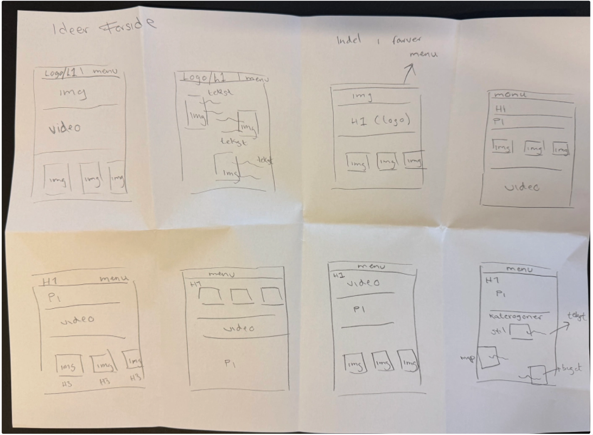
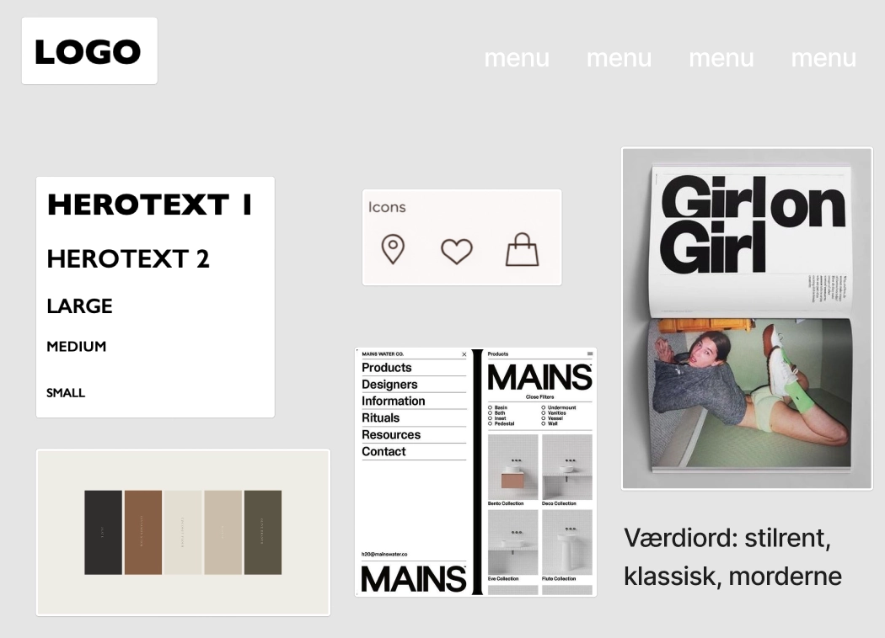
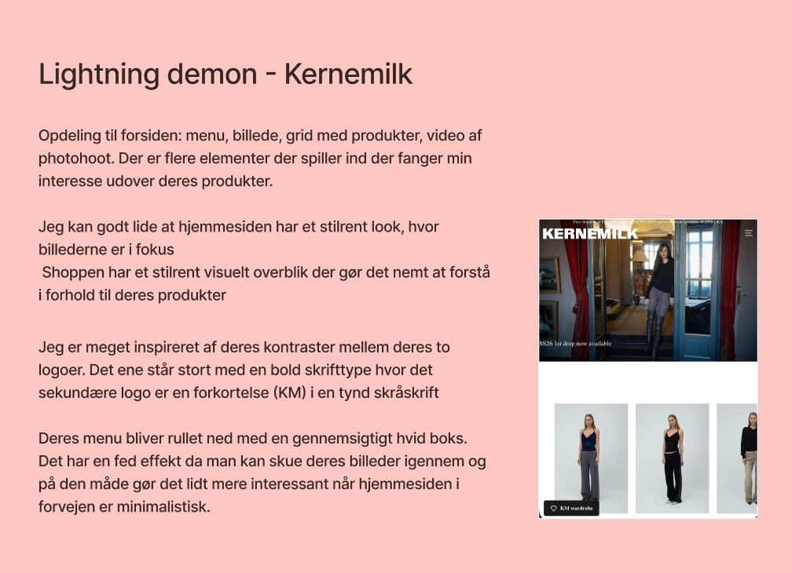
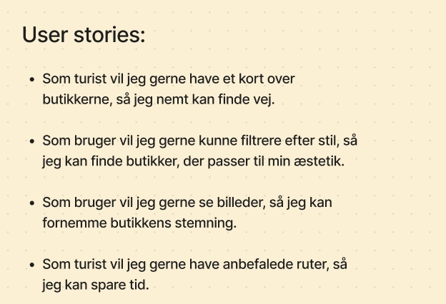

I Tema 3 arbejdede jeg med UX- og UI-design gennem udviklingen af emnesitet Vintage København. Fokus var på research, brugerforståelse, designprocesser og brugertests.

Emnesite:
Den endelige løsning var et website, der kombinerer inspiration og information om vintagebutikker i København. Gennem et enkelt og visuelt udtryk hjælper sitet brugeren med at udforske byens vintageunivers og finde butikker, der matcher deres stil.
Se projektProces:
Jeg startede min proces ved at undersøge målgruppen for Vintage København ved hjælp af brugertyper og userstories. Det gav mig en bedre forståelse for brugernes behov og hjalp mig med at definere retningen for projektet. Derefter arbejdede jeg med moodboards og style tiles for at udvikle det visuelle udtryk. Da jeg var i tvivl om designretningen, gennemførte jeg en Likert-test, som hjalp mig med at træffe en beslutning.
For at udvikle idéer til websitets opbygning brugte jeg Lightning Demos, Crazy 8 og Solution Sketch. På baggrund af dette udarbejdede jeg wireframes, som senere blev videreudviklet til en færdig prototype.




Hvad har jeg lært?
Gennem arbejdet med Vintage København lærte jeg, hvordan research og brugerforståelse kan danne grundlag for designbeslutninger. Jeg blev mere bevidst om at designe med udgangspunkt i målgruppen frem for mine egne præferencer. Derudover lærte jeg at bruge brugertests og feedback til at udvikle og forbedre min løsning gennem hele designprocessen.